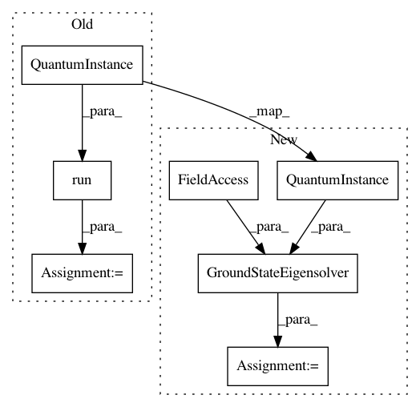

a8dbec9e5e7aedc49a8c09073eed54659013c75b,test/chemistry/test_uccsd_hartree_fock.py,TestUCCSDHartreeFock,test_uccsd_hf_aer_statevector,#TestUCCSDHartreeFock#,77
Before Change
return
backend = Aer.get_backend("statevector_simulator")
algo = VQE(self.qubit_op, self.var_form, self.optimizer)
result = algo.run(QuantumInstance(backend))
result = self.core.process_algorithm_result(result)
self.assertAlmostEqual(result.energy, self.reference_energy, places=6)
def test_uccsd_hf_aer_qasm(self):
After Change
return
backend = Aer.get_backend("statevector_simulator")
solver = VQE(var_form=self.var_form, optimizer=self.optimizer,
quantum_instance=QuantumInstance(backend=backend))
gsc = GroundStateEigensolver(self.fermionic_transformation, solver)
result = gsc.solve(self.driver)
self.assertAlmostEqual(result.energy, self.reference_energy, places=6)
In pattern: SUPERPATTERN
Frequency: 3
Non-data size: 7
Instances
Project Name: Qiskit/qiskit-aqua
Commit Name: a8dbec9e5e7aedc49a8c09073eed54659013c75b
Time: 2020-10-14
Author: bpa@zurich.ibm.com
File Name: test/chemistry/test_uccsd_hartree_fock.py
Class Name: TestUCCSDHartreeFock
Method Name: test_uccsd_hf_aer_statevector
Project Name: Qiskit/qiskit-aqua
Commit Name: a8dbec9e5e7aedc49a8c09073eed54659013c75b
Time: 2020-10-14
Author: bpa@zurich.ibm.com
File Name: test/chemistry/test_uccsd_hartree_fock.py
Class Name: TestUCCSDHartreeFock
Method Name: test_uccsd_hf_aer_qasm_snapshot
Project Name: Qiskit/qiskit-aqua
Commit Name: a8dbec9e5e7aedc49a8c09073eed54659013c75b
Time: 2020-10-14
Author: bpa@zurich.ibm.com
File Name: test/chemistry/test_uccsd_hartree_fock.py
Class Name: TestUCCSDHartreeFock
Method Name: test_uccsd_hf